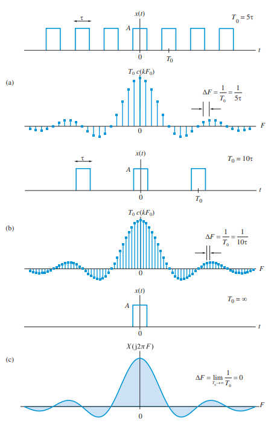

Transformada de Fourier#
La transformada de Fourier es la extensión de la serie de Fourier a funciones no periódicas. Esto se logra partiendo de una señal periódida con periodo \(T\) y frecuencia \(f_0 = \frac{1}{T}\), y tomando el límite cuando \(T\) tiende a infinito. En este caso, la frecuencia fundamental \(f_0\) tiende a cero y las frecuencias discretas de la serie de Fourier se convierten en frecuencias continuas. No es necesario imaginar que la señal deseada realmente se estira en el tiempo, ya que siempre se puede extender con ceros a izquierda y derecha y mantener la idea de que la señal es periódica.
{kind=link}

Si recordamos la formula de análisis de series de Fourier para una señal periódica, tenemos:
y para la síntesis:
Vamos a ver que los coeficientes \(c_n\) se transforman en una función continua \(X(\omega)\) en el dominio de la frecuencia al tomar el límite cuando \(T\) tiende a infinito.
Primero reemplazamos la formula de síntesis en la de análisis:
Ahora el truco es pensar \(\lim_{T \to \infty} \frac{1}{T} = \frac{1}{2\pi} d\omega\)
La transformada de Fourier (análisis) se define como:
donde \(x(t)\) es la función en el dominio del tiempo, \(X(\omega)\) es la función en el dominio de la frecuencia, y es \(\omega\) la frecuencia angular.
Luego se define la transformada inversa (síntesis) como:
La transformada de Fourier se puede expresar en función de la frecuencia \(f\) en lugar de la frecuencia angular \(\omega\). La relación entre ambas es \(\omega = 2\pi f\)
donde \(X(f)\) es la función en el dominio de la frecuencia, y \(f\) es la frecuencia. La transformada inversa se define como: $\( \mathcal{F}^{-1}\{X(f)\} = x(t) = \int_{-\infty}^{\infty} X(f) e^{j2\pi f t} df \)$
Propiedades de la Transformada de Fourier#
Linealidad#
La transformada de Fourier es lineal. Sean \( x(t) \) y \( y(t) \) funciones y \(a,b\) constantes:
Desplazamiento en el tiempo#
Un desplazamiento temporal equivale a una modulación exponencial en frecuencia:
Desplazamiento en frecuencia#
Una modulación exponencial en tiempo equivale a un desplazamiento en frecuencia:
Escalado en tiempo#
Escalar en tiempo afecta inversamente al escalado en frecuencia:
Partes real e imaginaria#
Relación entre partes reales e imaginarias de la señal y su transformada:
Parte real:
Parte imaginaria:
Componente en frecuencia cero#
La componente en frecuencia cero corresponde al área total bajo la señal:
Teoremas de Plancherel y Parseval#
Relacionan la energía de la señal en tiempo y frecuencia:
Plancherel:
Parseval (forma general):
Teorema de la convolución#
La convolución temporal corresponde a multiplicación en frecuencia:
donde:
Teorema de la correlación cruzada#
La correlación cruzada temporal equivale a multiplicación conjugada en frecuencia:
donde:
Teorema de Wiener-Khinchin#
La transformada de Fourier de la autocorrelación de una señal es igual a la magnitud al cuadrado de la transformada. Si reemplazamos \(Y(f)\) por \(X^*(f)\) en el teorema de la correlación cruzada, obtenemos:
Definimos a la densidad espectral de potencia como
Por lo tanto, la relación entre la autocorrelación y la densidad espectral de potencia es:
donde \( R_x(\tau) \) es la función de autocorrelación de la señal \( x(t) \).
Diferenciación#
La diferenciación en tiempo equivale a multiplicar por \( j\,2\pi\,f \) en frecuencia:
Primera derivada:
Derivada de orden \(n\):